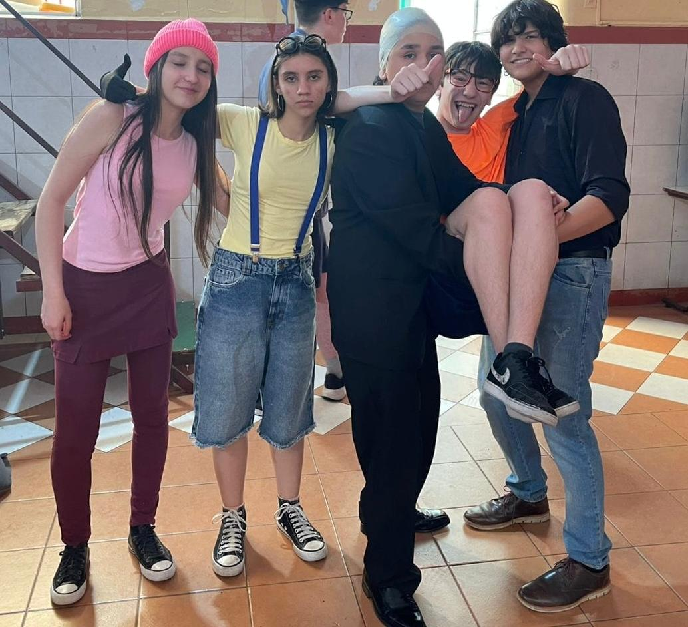
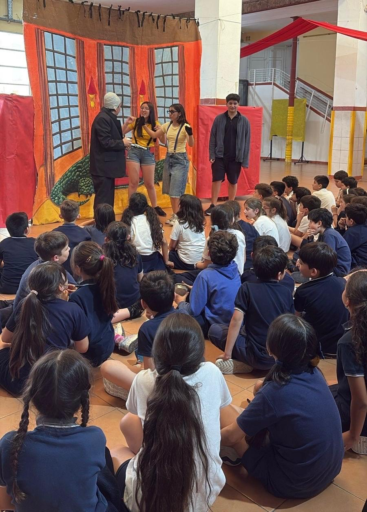
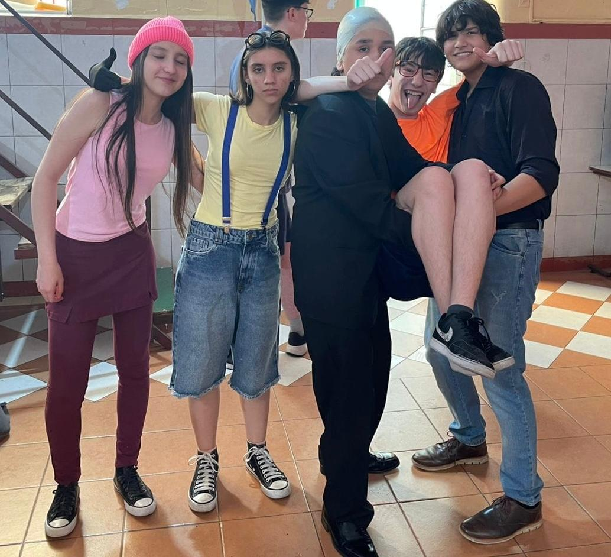
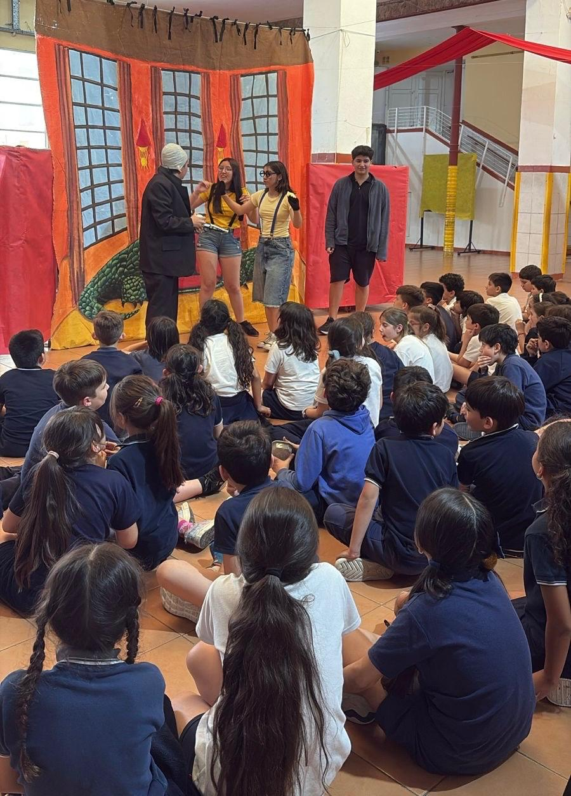

Hércules representada por 4ºB para alumnos de 5º, 6º y 7ºgrado.
Mi villano favorito representada por 2ºB para alumnos de3º y 4º grado.
Alicia y Dorothy en una aventura contra el tiempo representada por 4ºA y postpri 2 , para alumnos de 1º y 2º grado.
Por Gabriel Praticó (Profesor de Teatro)

Estas tres muestras, se presentan con el fin de poner en práctica desde el instrumento de la voz y el cuerpo trabajados respectivamente, toda la puesta en escena aprendida e interiorizada por cada uno de los alumnos de los respectivos años. De esta manera, se puede dar una finalización del proceso de aprendizaje trabajado durante todo el año y se podrán mostrar los trabajos de puesta individual, las solturas escénicas de los alumnos que más lo necesiten y requieran, la desinhibición de los mismos, el trabajo de relación humana rompiendo con los subgrupos que siempre se presentan y principalmente el disfrute completo y artístico de todo el grupo. Se trabajó con los alumnos la muestra de fin del proceso desarrollado durante el año, en todos los casos una puesta escénica de carácter infantil, la cual tiene la particularidad de ser interactiva en el público, rompiendo la cuarta pared teatral y haciendo participar al espectador de la misma puesta en escena, logrando así el vínculo escénico desarrollado en los alumnos desde la creación de un personaje, el uso escenográfico y de utilería, el trabajo de vestuario y la variedad de coreografías trabajadas, tanto individual como grupalmente.
 


